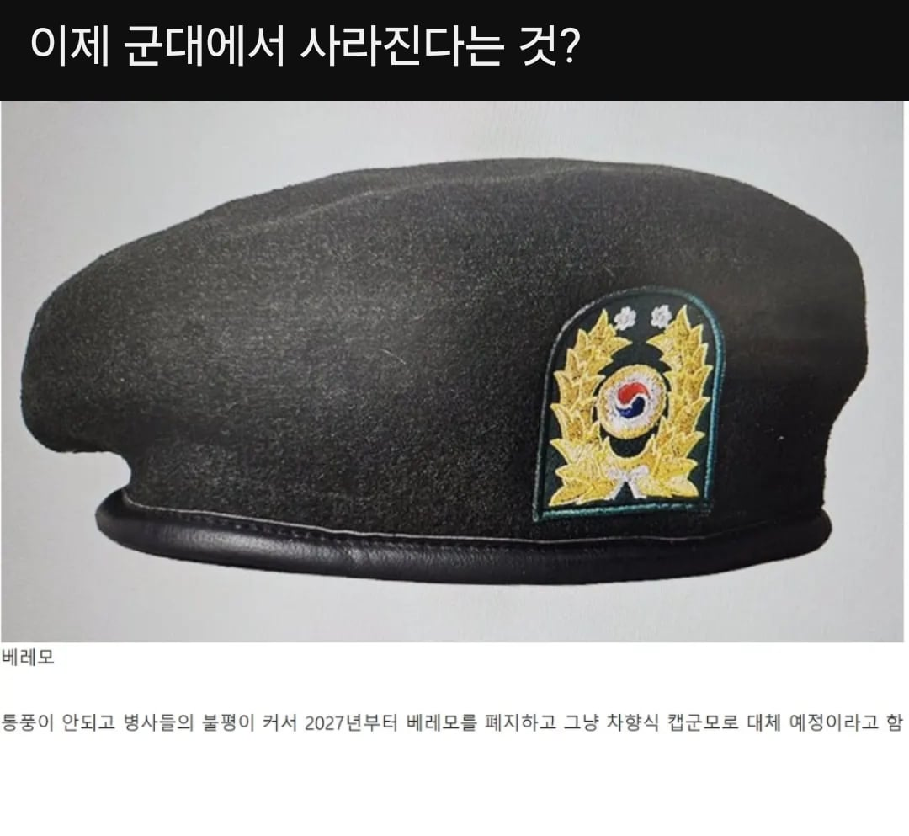

사촌동생 사진 봤는데 ㄹㅇ 없더라

사촌동생 사진 봤는데 ㄹㅇ 없더라
육군은 훈련소때 다 줌
베레모는 중간각으로 해서 쓰고다니면 존나멋있음
부대에서 그렇게 하고다녔더니 연대장도 부탁함;;
각 잘잡고 얼굴도 좀 생겼으면 이만한 모자가 없음 준내 불편해서 그렇지
개좆병신같은쓰레기모자 모자라고도 부르기 아까운 폐기물 덥고 습하고 땀차고 머리빠짐
ㅈ같았는데 잘됐다 축하한다 입대자들아
이마에 검은색 자국 나는게 좆이였지
건조기 잘못 돌리면쪼그라들어서 각도 안잡히고 걍 요리사모자됨 ㅋㅋ
17군번인데 군생활중에 생활모라고하나 육군써있는 모자 줬는데
공식적인 행사때는 베레모쓰고 아침점호나 뭐 작업하고 그럴때는 생활모씀
원래 안썼어.... 08군번임 틀틀틀
베레모 특수부대만 쓰는거 아녔음?